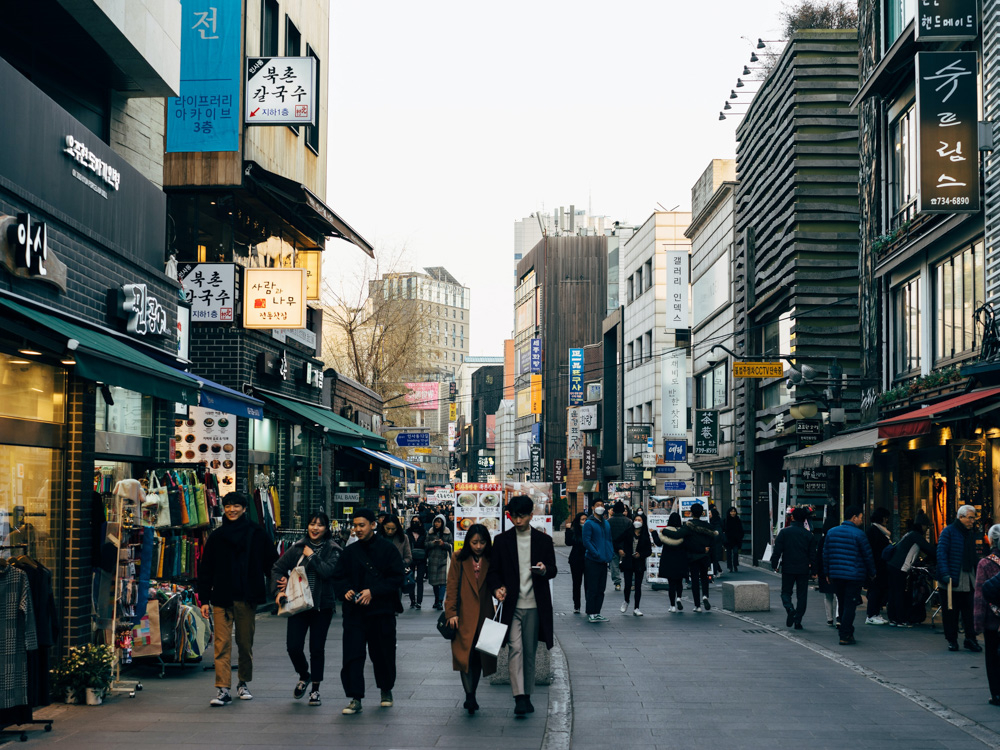
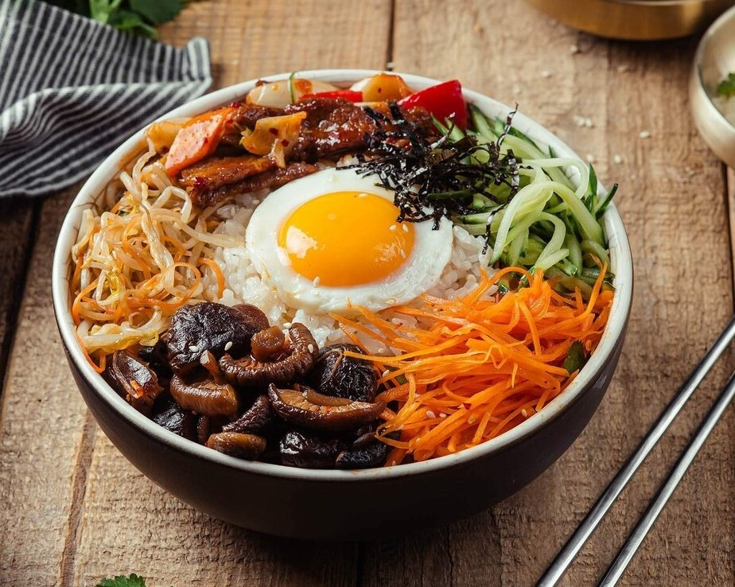
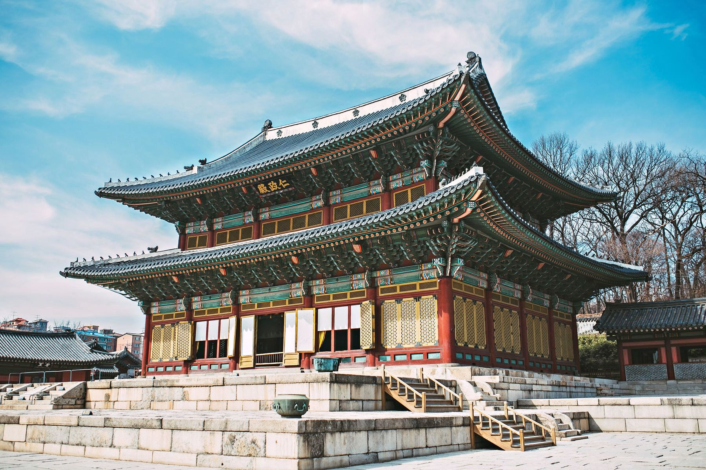

Между горами
и морем.
Первое знакомство с Кореей через Сораксан, маленькие острова и тепло горячих источников.
Почувствовать путешествиеУ Кореи есть
и такой характер.
Утро в горах. Дорога к морю. Остров, по которому хочется идти без спешки. И тёплая вода после дня на свежем воздухе. Из этих впечатлений складывается наше путешествие.

Поднять взгляд.
Замедлить шаг.
Сораксан станет горной частью путешествия: скалы, лес и время побыть среди большого пейзажа.
Тропы и продолжительность прогулок подберём при подготовке программы. До записи расскажем о подъёмах и необходимой подготовке.

Там, где день
измеряют приливами.
Маленькие острова, морской ветер и прогулки у воды. Хочется оставить время на детали: лодки у причала, местную еду и разговоры по дороге.
Конкретные острова выберем после проверки переездов и сезона. Фотография передаёт настроение, а не утверждённую остановку.
А потом —
просто выдохнуть.
После прогулок хочется тепла и отдыха. Для этой части программы подберём термальный комплекс и заранее объясним, как устроено посещение.
Разные пейзажи.
Одна история.
Сейчас мы собираем маршрут. Здесь появится подробная программа по дням — с переездами, прогулками и временем для себя.
Встреча с Кореей
Знакомство с группой и первые впечатления. Место встречи и программу начала поездки уточним.
Сораксан
Горная часть путешествия. Выбор троп, нагрузку и время в пути укажем в полной программе.
Маленькие острова
Морская часть путешествия. Выберем острова и проверим транспорт, чтобы связать их с остальным маршрутом.
Горячие источники
Время для отдыха. Условия посещения и выбранный комплекс добавим после проверки.
Это тематические части будущей программы, а не расписание по дням. Порядок остановок, длительность и даты пока не утверждены.
Самое живое —
в деталях.
Городские переулки, знакомство с едой и неожиданные повороты прогулок тоже найдут своё место в путешествии.



Небольшая команда.
Внимание к деталям.
«Приглашение в Корею» — камерный проект о путешествиях по стране. Мы собираем маршрут вокруг природы и местной жизни: соединяем горные прогулки, острова и отдых у горячих источников.
Наш подход — продуманная программа, понятные условия и время на собственные открытия. До начала набора расскажем о маршруте, проживании, переездах и сопровождении.
Понятная нагрузка
В программе укажем длительность прогулок, подъёмы и требования к подготовке.
Продуманная дорога
Проверим переезды между горами и островами. Порядок остановок появится после этой работы.
Время оглядеться
При составлении программы оставим место для отдыха и самостоятельных открытий.
Чтобы ожидания
совпали.
Путешествие в подготовкеМы работаем над программой. После выбора маршрута здесь появятся даты, стоимость, проживание и полный список включённых услуг.
Узнать о подготовке поездки ↗- Даты и длительностьУточняются
- Размер группыОбъявим с программой
- Проживание и транспортПодбираем
- Стоимость участияПосле расчёта маршрута
- Что входит в стоимостьОпубликуем отдельно
- Бронирование и оплатаНабор пока не открыт
Возможно,
вы спросите.
Подойдёт ли поездка для первого раза?
Да, именно так мы её задумываем: первое знакомство с Кореей с акцентом на природу и местную жизнь. Подробности и требования к участникам опубликуем вместе с программой.
Нужна ли подготовка для Сораксана?
Это зависит от выбранных троп. Мы пока их подбираем. До записи укажем время пешком, перепад высоты и возможные альтернативы, чтобы вы могли оценить свои силы.
Какие острова войдут в маршрут?
Выбор ещё впереди: нужно учесть сезон, переезды и морское сообщение. На странице использована фотография Ведо как иллюстрация островной Кореи; посещение этого острова пока не заявлено.
Можно ли уже записаться?
Продажа участия пока не открыта. Можно написать в Telegram-канал: обсудим интерес к поездке и расскажем, какие детали ещё готовятся.
Где узнать даты и стоимость?
После подготовки программы разместим их здесь и расскажем о поездке в Telegram-канале. Пока цена и даты не утверждены.

Возможно, ваша Корея
начнётся здесь.
Расскажите, какую Корею хочется увидеть вам. Мы ответим на вопросы о путешествии и подготовке программы.
Перейти в Telegram-канал ↗